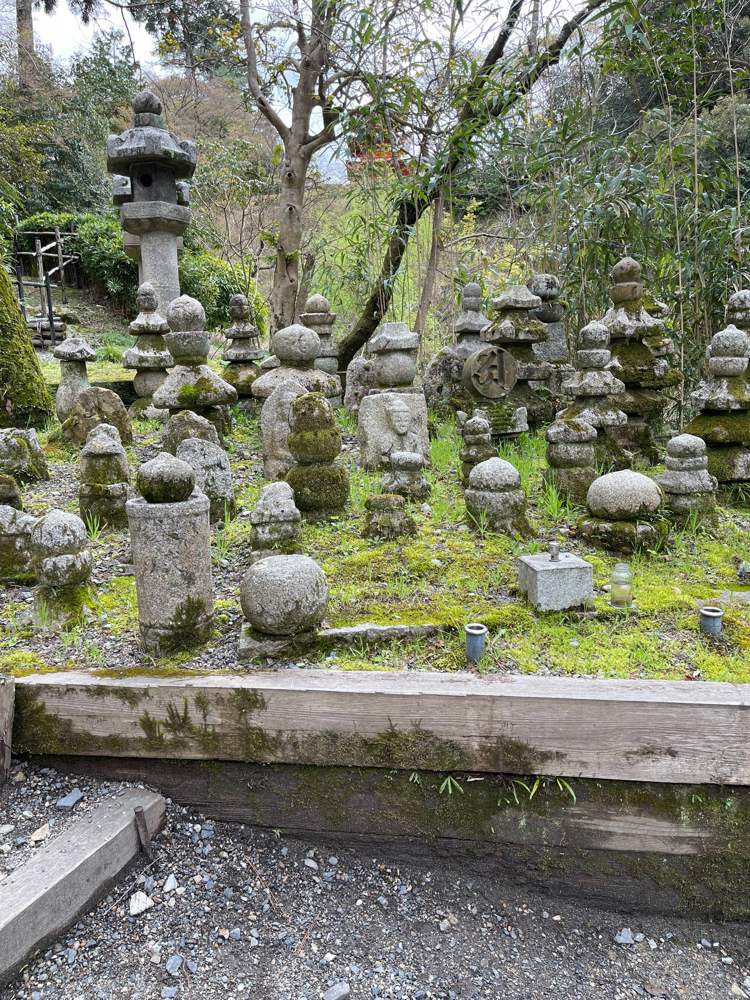
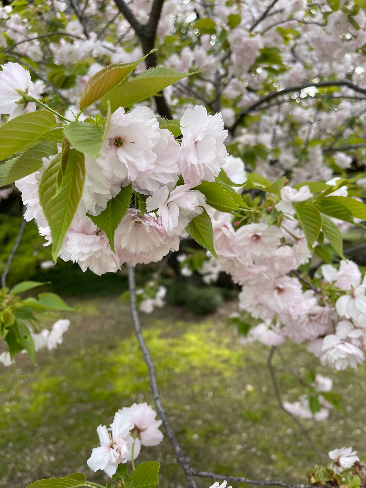
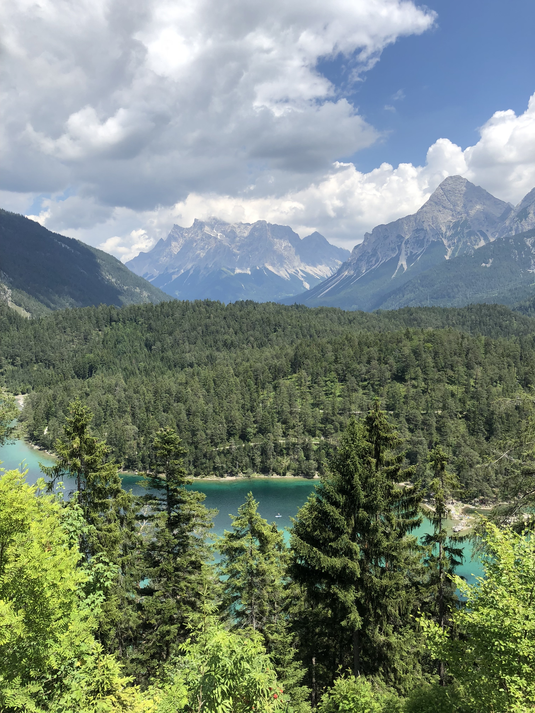
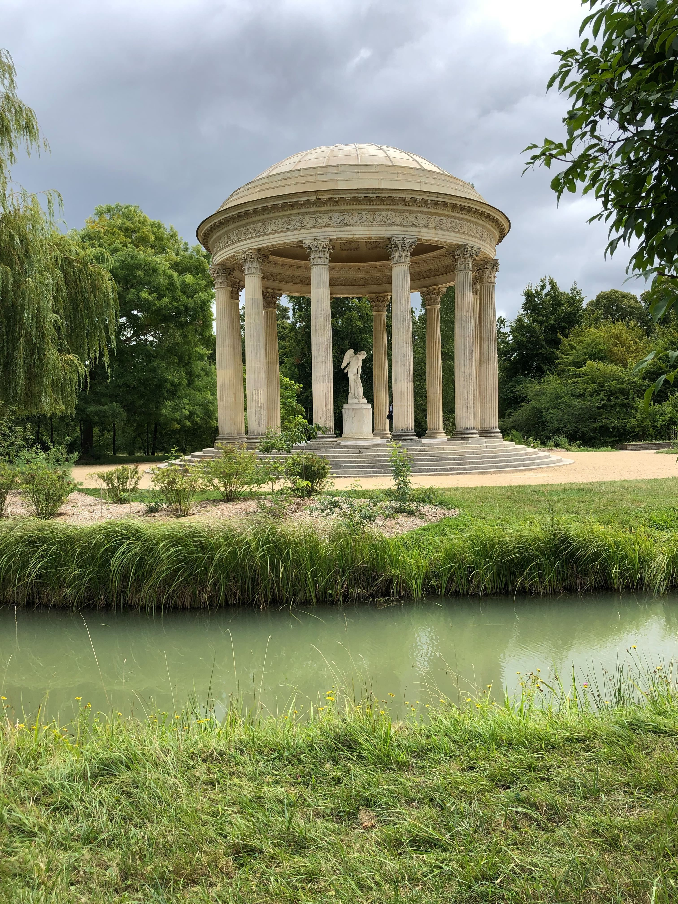

Japan: The Beauty of Simplicity in Nature
One of the most profound lessons I learned in Japan was the beauty of simplicity, not just in design, but in nature itself. Japan’s landscapes are a masterclass in subtle elegance. From the rolling hills of Kyoto’s temples to the serene stillness of a mountain lake, nature is treated with the utmost respect, its quiet beauty reflected in the culture. Japan’s Zen gardens, with their carefully placed rocks and meticulously raked gravel, don’t just encourage stillness; they invite you to become one with the environment, to find peace in its simplicity.
The Japanese concept of Wabi-Sabi — finding beauty in imperfection and transience — extended to my experiences with nature. Whether it was the fleeting beauty of cherry blossoms in spring or the quiet, almost hidden beauty of a moss-covered temple, I learned to embrace the impermanence of all things. Japan taught me that nature’s most profound beauty is often found in the smallest details: a single leaf floating on a pond, the patterns of a waterfall, or the play of light through a bamboo forest. Nature in Japan is an invitation to slow down, to notice the subtle wonders, and to appreciate the present moment.
Europe: A Tapestry of Nature's Majesty
My travels through Europe were like stepping into a living landscape painting. From the rugged mountains of Switzerland to the sun-dappled vineyards of France, Europe’s natural beauty is as varied as it is awe-inspiring. I found that nature doesn’t just complement the cultural history; it defines it. The intersection of human history and the natural world is seamless. The way nature is woven into the architecture, whether through the gardens of Versailles or the ancient stone walls of the Irish countryside, gave me a deep sense of how intertwined life and nature are. I realized that the landscapes had shaped the stories and identities of the people who lived there for centuries. The natural beauty of Europe is not just something to be admired from afar; it’s something to be experienced, breathed in, and felt in your bones.
In both Japan and Europe, I felt an undeniable connection to nature. In Japan, nature is sacred, reflected in everything from the majestic Mount Fuji to peaceful Zen gardens. Europe, with its open landscapes and preserved forests, reminded me that nature is integral to humanity’s story. Both places taught me that, whether in the quiet of a Japanese garden or the vastness of European forests, nature holds timeless beauty and wisdom, inviting us to pause and truly experience the world around us.
